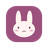

TabBunny
Help
A HOME FOR YOUR TABS
Done for now?
Keep your place.
Reading your web tabs…
Save this window
No naming needed. Your tabs stay open.
PICK UP WHERE YOU LEFT OFF
Resume latest window
Choose tabs, name a project, or browse backups
Open tabs
Saved burrows
Find an open tab
Select visible
Burrow name
Close selected tabs after saving
Save selected tabs
Search saved burrows
Export backup
Import backup